SYDE 572 · Introduction to Pattern Recognition · Assignment 3
Principal Component Analysis and Isomap on the Iris Dataset
Abstract—This report studies dimensionality reduction on the UCI Iris dataset (150 samples, 4 features, 3 species). Part 1 derives the first principal component of a small 2D dataset by hand and computes reconstruction errors. Part 2 visualizes one-, two- and three-dimensional marginals of Iris. Parts 3 and 4 apply PCA, report the principal axes, and quantify compression through the explained variance: two components retain 97.76% of the variance and one component already exceeds 50%. Part 5 compares PCA with Isomap (k = 3) and concludes that PCA is preferable for this nearly linear dataset.
Index Terms—principal component analysis, explained variance, Isomap, manifold learning, Iris dataset.
I. Data and Setup
The Iris data (UCI repository) contain 150 flowers, 50 each of Iris setosa, Iris versicolor and Iris virginica, described by sepal length, sepal width, petal length and petal width in cm. Colors are consistent in every figure: setosa blue, versicolor orange, virginica green. For Parts 3–5, each feature is mean-centered but not scaled to unit variance, and this choice is kept in all later parts. All four features share the same unit (cm), so the raw variances are directly comparable. Scikit-learn 1.9 provides PCA and Isomap; every random choice uses seed 572.
II. Part 1 — PCA by Hand
The dataset has five examples with two features: \(x_1=(-2,-1,0,1,2)\) and \(x_2=(-1,0,1,2,3)\). Every point satisfies \(x_2=x_1+1\).
A. The first principal component
The feature means are \(\boldsymbol\mu=(0,1)^\top\), so the centered data matrix has rows \((-2,-2),(-1,-1),(0,0),(1,1),(2,2)\). The sample covariance is
The characteristic equation \((5/2-\lambda)^2-(5/2)^2=\lambda(\lambda-5)=0\) gives \(\lambda_1=5\) and \(\lambda_2=0\). Solving \((C-5I)\mathbf w=0\) gives \(w_1=w_2\), and the constraint \(\lVert\mathbf w\rVert=1\) fixes the scale:
The first PC captures all of the variance because the points lie exactly on a line of slope 1 through the mean. The handwritten derivation is shown in Fig. 1.
B. Reconstruction errors
A point \(\mathbf x\) is reconstructed as \(\hat{\mathbf x}=\boldsymbol\mu+z\mathbf w_1\) with \(z=\mathbf w_1^\top(\mathbf x-\boldsymbol\mu)\), and the L2 reconstruction error is \(\lVert\mathbf x-\hat{\mathbf x}\rVert_2\).
Point (3,3). \(\mathbf x_c=(3,2)^\top\), \(z=\tfrac1{\sqrt2}(3+2)=\tfrac5{\sqrt2}\), so
Point (3,4). \(\mathbf x_c=(3,3)^\top\), \(z=\tfrac6{\sqrt2}\), so \(\hat{\mathbf x}=(0,1)^\top+3(1,1)^\top=(3,4)^\top\) and the error is 0.
The point (3,4) lies on the line \(x_2=x_1+1\), which is the PC1 axis, so it is reconstructed exactly. The point (3,3) is off that line, and the error is its distance to the line, \(|3-3-1|/\sqrt2=1/\sqrt2\).
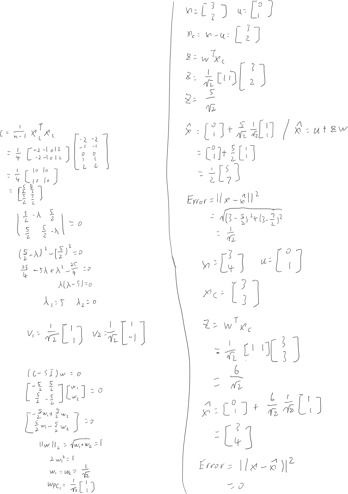
III. Part 2 — Data Visualization
Marginalizing means projecting the data onto a subset of the feature axes. Fig. 2 shows the four one-dimensional marginals, Fig. 3 every two-dimensional marginal, Fig. 4 the most informative pair, and Fig. 5 a three-dimensional marginal (petal length, petal width, sepal length) from two viewpoints.
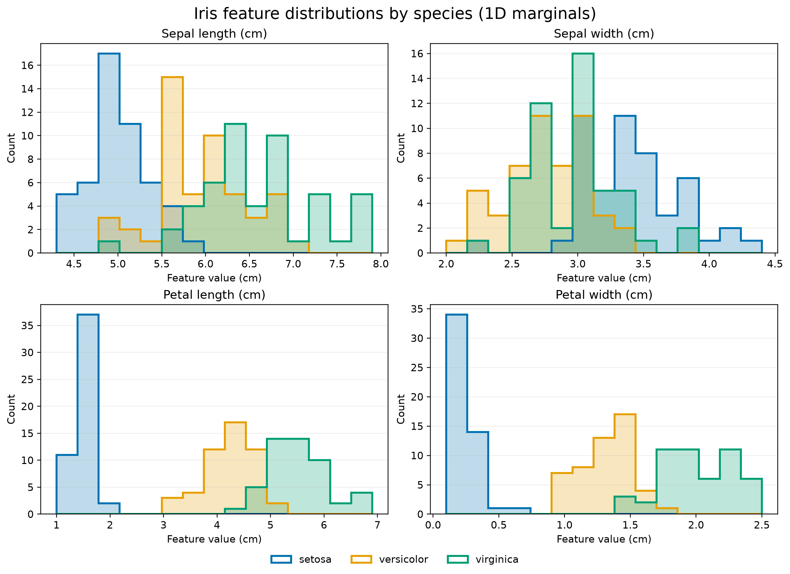
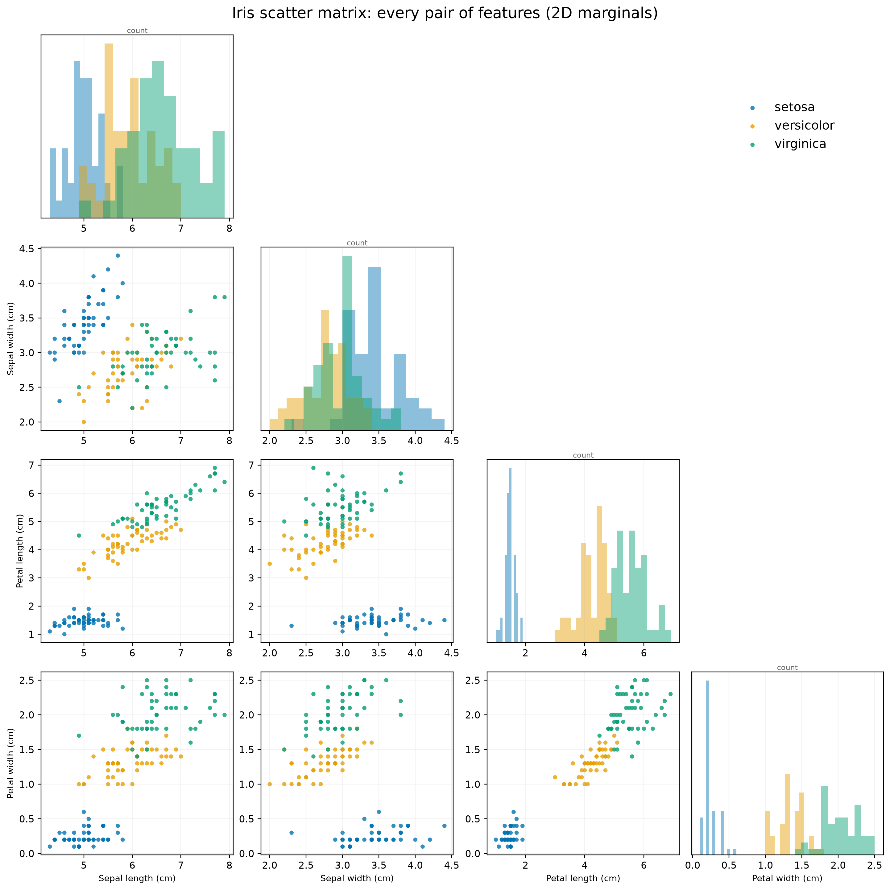
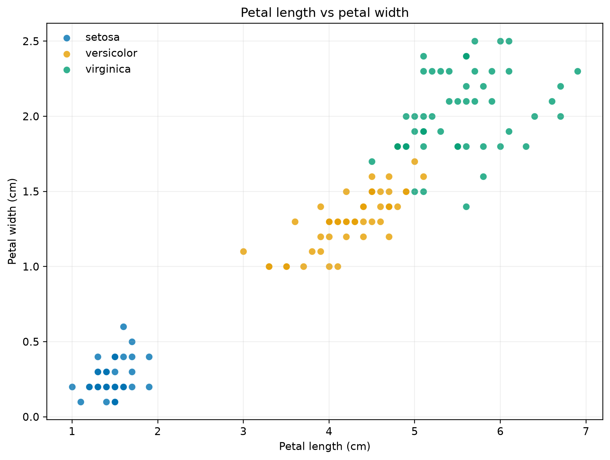
| Feature | Best 1D threshold accuracy | Setosa separable? |
|---|---|---|
| Sepal length | 73% | no |
| Sepal width | 63% | no |
| Petal length | 93% | yes |
| Petal width | 94% | yes |
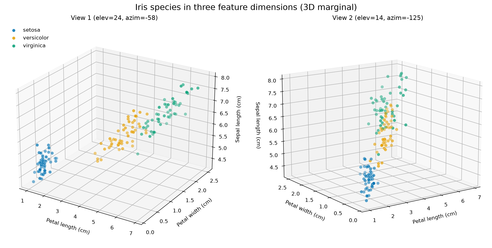
A. Do the marginals reveal the classes?
Yes, but only partly. Setosa forms a clean, isolated cluster in every marginal that includes a petal feature: its petal length is 1.0–1.9 cm against at least 3.0 cm for the other species, and its petal width is 0.1–0.6 cm against at least 1.0 cm (Figs. 2–4). A single threshold on either petal feature isolates it. Versicolor and virginica overlap in every single feature. The overlap is smallest for petal width and petal length, where the best single threshold separates them with 94% and 93% accuracy (Table I), and it is smaller still in the petal length versus petal width plane (Fig. 4). Sepal width alone is the poorest feature (63%), and the sepal-only plane mixes the two species heavily. The 3D marginal (Fig. 5) adds little over the petal plane: the versicolor and virginica clouds still touch. No marginalization gives three fully separated clusters, which motivates combining all four features, as PCA does in Part 3.
IV. Part 3 — PCA
PCA is fitted with sklearn.decomposition.PCA(n_components=4) on the mean-centered data. Table II gives the principal axes (unit vectors, rows of components_) and the variance each explains.
| PC | Axis vector | Explained variance | Cumulative |
|---|---|---|---|
| PC1 | (0.3616, −0.0823, 0.8566, 0.3588) | 92.46% | 92.46% |
| PC2 | (0.6565, 0.7297, −0.1758, −0.0747) | 5.30% | 97.76% |
| PC3 | (−0.5810, 0.5964, 0.0725, 0.5491) | 1.72% | 99.48% |
| PC4 | (0.3173, −0.3241, −0.4797, 0.7511) | 0.52% | 100% |
PC1 is dominated by petal length (loading 0.86), with smaller equal contributions from sepal length and petal width: it is essentially an overall flower-size axis. PC2 mixes sepal length and sepal width (0.66, 0.73) with almost no petal content. The overall sign of each axis is arbitrary.
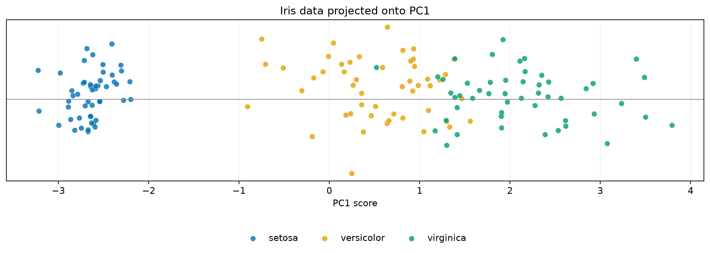
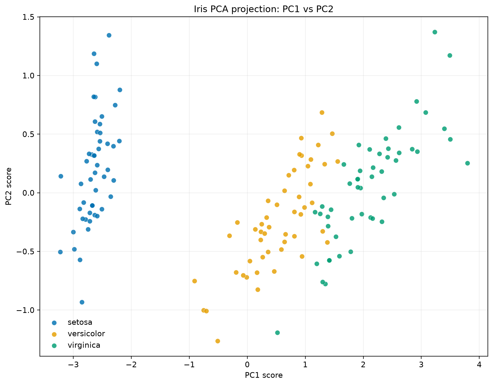
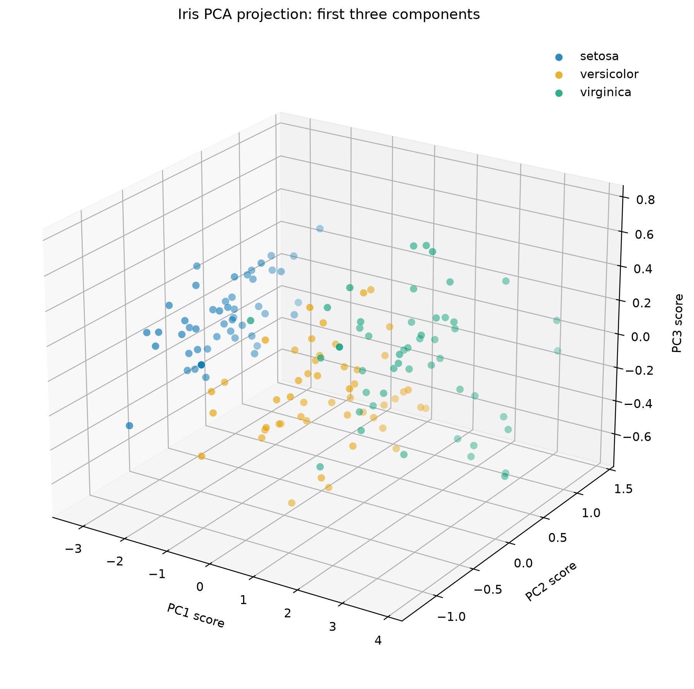
On PC1 alone (Fig. 6) setosa is cleanly separated, while versicolor and virginica overlap for PC1 scores of roughly 0.5–1.5. Adding PC2 (Fig. 7) spreads the points vertically but does little to separate those two species, because PC2 carries only 5.3% of the variance and mostly sepal information. The third component (Fig. 8) carries 1.7% of the variance and adds essentially no visible class structure. Most of the usable information is therefore already in PC1 and PC2.
V. Part 4 — Data Compression
For centered data \(X\), the total variance is proportional to \(\lVert X\rVert_F^2=\sum_j\lambda_j\) (up to the factor \(n-1\)). Projecting onto the first \(k\) orthonormal PCs \(W_k\) retains \(\lVert XW_k\rVert_F^2=\sum_{j\le k}\lambda_j\), so the fraction of variance retained is \(\sum_{j\le k}\lambda_j/\sum_j\lambda_j\), and the squared reconstruction error is the discarded \(\sum_{j>k}\lambda_j\) in the same units.
2. One PC is enough to explain 50% of the variance (PC1 alone explains 92.46%).
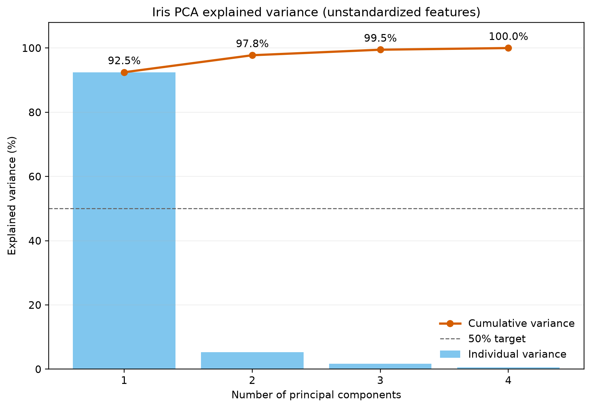
The spectrum is dominated by PC1, so Iris is highly compressible: 99.48% of the variance survives with three components, and a two-dimensional code discards only 2.24%. If the features were instead standardized to unit variance, the ratios would be about (0.730, 0.229, 0.037, 0.005), giving 95.8% for two components and still one component for 50%. The conclusions are therefore not sensitive to this choice, but the raw-scale numbers above are the ones used throughout this report.
VI. Part 5 — Non-linear Components
Isomap builds a graph connecting each point to its \(k\) nearest neighbors, computes shortest-path (geodesic) distances on that graph, and embeds them in low dimension with MDS. The call is Isomap(n_neighbors=3, n_components=2) on the same mean-centered data (full code in Section VII).
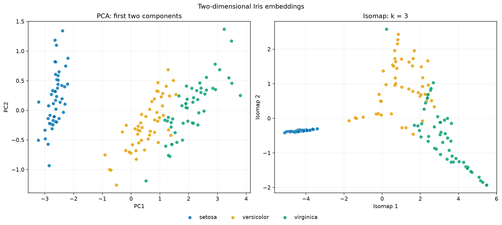
Both embeddings isolate setosa and leave versicolor and virginica partly mixed. With k = 3 the neighbor graph splits into two connected components, because setosa is separated from the other species by a gap that three-nearest-neighbor links cannot bridge (scikit-learn warns and joins the components). This disconnection persists for k = 5 and k = 10 (Fig. 11), so it reflects a real gap in the data. As a consequence, setosa is compressed into a thin strip in the Isomap embedding and its internal spread is lost.
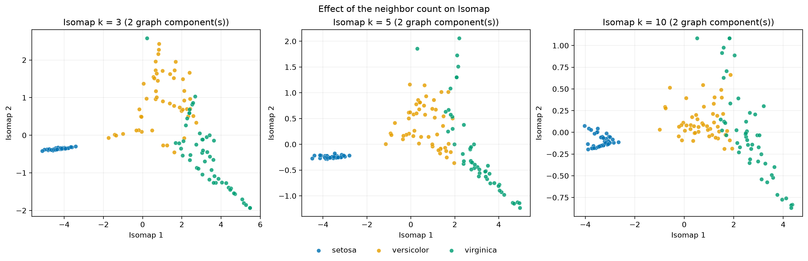
| Embedding | Accuracy | Connected components |
|---|---|---|
| PCA (2 PCs) | 0.967 ± 0.057 | — |
| Isomap, k = 3 | 0.920 ± 0.053 | 2 |
| Isomap, k = 5 | 0.940 ± 0.073 | 2 |
| Isomap, k = 10 | 0.940 ± 0.066 | 2 |
A. Which is preferable?
PCA is preferable for Iris. (i) Compression: PCA is linear and has a closed-form solution. It comes with an explained-variance measure (97.76% for two components), an explicit inverse map, and a reconstruction error, none of which Isomap provides. (ii) Classification: a 5-NN classifier on the 2D embeddings is as accurate on PCA (96.7%) as on any Isomap setting tried (92.0–94.0%), and the differences are within about one standard deviation across folds (Table III). (iii) Robustness: Isomap depends on k and, as shown, on graph connectivity. Isomap's advantage is unrolling a curved manifold, and the Iris data are close to linear, so there is little curvature to unroll. A caveat on Table III: both embeddings were fitted on all 150 samples before cross-validation, so the scores are descriptive rather than a leakage-free estimate of end-to-end accuracy.
VII. Part 5 Code
"""Isomap comparison for SYDE 572 Assignment 3, Part 5.
Preprocessing remains consistent with Parts 3 and 4: mean-centering without
standardizing feature variances.
"""
from __future__ import annotations
from pathlib import Path
import warnings
import matplotlib
matplotlib.use("Agg")
import matplotlib.pyplot as plt
import numpy as np
from sklearn.manifold import Isomap
from sklearn.model_selection import StratifiedKFold, cross_val_score
from scipy.sparse.csgraph import connected_components
from sklearn.neighbors import KNeighborsClassifier, kneighbors_graph
from part2 import COLORS, SPECIES, load_iris
from part3 import fit_pca
OUTPUT_DIR = Path(__file__).with_name("output")
def compute_embeddings() -> tuple[np.ndarray, np.ndarray, np.ndarray, list[str]]:
"""Return PCA and Isomap 2D embeddings plus any Isomap warnings."""
features, labels = load_iris()
X = np.asarray(features, dtype=float)
y = np.asarray(labels)
X_centered = X - X.mean(axis=0)
_, pca_scores, _ = fit_pca()
pca_embedding = pca_scores[:, :2]
isomap = Isomap(n_neighbors=3, n_components=2)
with warnings.catch_warnings(record=True) as caught:
warnings.simplefilter("always")
isomap_embedding = isomap.fit_transform(X_centered)
warning_messages = [str(item.message) for item in caught]
return pca_embedding, isomap_embedding, y, warning_messages
def classification_accuracy(embedding: np.ndarray, y: np.ndarray) -> tuple[float, float]:
"""Evaluate a 5-neighbor classifier with stratified 10-fold validation."""
classifier = KNeighborsClassifier(n_neighbors=5)
folds = StratifiedKFold(n_splits=10, shuffle=True, random_state=572)
scores = cross_val_score(classifier, embedding, y, cv=folds, scoring="accuracy")
return float(scores.mean()), float(scores.std(ddof=1))
NEIGHBOR_SWEEP = (3, 5, 10)
def sweep_isomap(X_centered: np.ndarray, y: np.ndarray) -> dict[int, dict]:
"""Fit Isomap for several k and record embedding, components and accuracy."""
results: dict[int, dict] = {}
for k in NEIGHBOR_SWEEP:
with warnings.catch_warnings():
warnings.simplefilter("ignore")
embedding = Isomap(n_neighbors=k, n_components=2).fit_transform(X_centered)
graph = kneighbors_graph(X_centered, n_neighbors=k, mode="connectivity")
n_components, _ = connected_components(graph, directed=False)
accuracy = classification_accuracy(embedding, y)
results[k] = {
"embedding": embedding,
"components": int(n_components),
"accuracy": accuracy,
}
return results
def save_sweep_plot(sweep: dict[int, dict], y: np.ndarray) -> Path:
fig, axes = plt.subplots(1, len(sweep), figsize=(5 * len(sweep), 4.8), constrained_layout=True)
for ax, (k, result) in zip(axes, sweep.items()):
for species in SPECIES:
mask = y == species
ax.scatter(
result["embedding"][mask, 0],
result["embedding"][mask, 1],
s=30,
alpha=0.82,
color=COLORS[species],
edgecolors="white",
linewidths=0.3,
label=species.removeprefix("Iris-"),
)
ax.set_title(f"Isomap k = {k} ({result['components']} graph component(s))")
ax.set_xlabel("Isomap 1")
ax.set_ylabel("Isomap 2")
ax.grid(alpha=0.2)
handles, labels = axes[0].get_legend_handles_labels()
fig.legend(handles, labels, loc="outside lower center", ncols=3, frameon=False)
fig.suptitle("Effect of the neighbor count on Isomap")
output_path = OUTPUT_DIR / "part5_isomap_k_sweep.png"
fig.savefig(output_path, dpi=200, bbox_inches="tight")
plt.close(fig)
return output_path
def save_comparison_plot(
pca_embedding: np.ndarray,
isomap_embedding: np.ndarray,
y: np.ndarray,
) -> Path:
fig, axes = plt.subplots(1, 2, figsize=(13, 5.8), constrained_layout=True)
panels = (
(axes[0], pca_embedding, "PCA: first two components", "PC1", "PC2"),
(axes[1], isomap_embedding, "Isomap: k = 3", "Isomap 1", "Isomap 2"),
)
for ax, embedding, title, x_label, y_label in panels:
for species in SPECIES:
mask = y == species
ax.scatter(
embedding[mask, 0],
embedding[mask, 1],
s=40,
alpha=0.82,
color=COLORS[species],
edgecolors="white",
linewidths=0.35,
label=species.removeprefix("Iris-"),
)
ax.set_title(title)
ax.set_xlabel(x_label)
ax.set_ylabel(y_label)
ax.grid(alpha=0.2)
handles, labels = axes[0].get_legend_handles_labels()
fig.legend(handles, labels, loc="outside lower center", ncols=3, frameon=False)
fig.suptitle("Two-dimensional Iris embeddings")
output_path = OUTPUT_DIR / "part5_pca_vs_isomap.png"
fig.savefig(output_path, dpi=220, bbox_inches="tight")
plt.close(fig)
return output_path
def write_report(
pca_accuracy: tuple[float, float],
isomap_accuracy: tuple[float, float],
warning_messages: list[str],
sweep: dict[int, dict],
) -> Path:
warning_text = (
"Isomap warning(s) observed:\n- " + "\n- ".join(warning_messages)
if warning_messages
else "No disconnected-neighbor-graph warning occurred in this run."
)
sweep_lines = "\n".join(
f"k = {k}: {r['components']} connected component(s), 2D kNN accuracy "
f"{r['accuracy'][0]:.3f} +/- {r['accuracy'][1]:.3f}"
for k, r in sweep.items()
)
report = (
"Preprocessing: mean-centered; not standardized to unit variance.\n\n"
"Method comparison\n"
"PCA is linear, has a closed-form eigendecomposition/SVD solution, supplies "
"an explained-variance compression measure, and supports inverse "
"transformation and reconstruction-error analysis. Isomap instead builds a "
"nearest-neighbor graph and attempts to preserve graph-geodesic distances, "
"so it can unroll a curved manifold. It does not provide a PCA-style "
"explained-variance measure or a simple inverse reconstruction.\n\n"
"Quantitative comparison\n"
"A 5-neighbor classifier was evaluated on each completed 2D embedding using "
"stratified 10-fold cross-validation. Because the embeddings were fitted to "
"the full dataset before validation, these scores are descriptive rather "
"than a leakage-free estimate of an end-to-end prediction pipeline.\n"
f"PCA 2D accuracy: {pca_accuracy[0]:.3f} +/- {pca_accuracy[1]:.3f}\n"
f"Isomap 2D accuracy: {isomap_accuracy[0]:.3f} +/- {isomap_accuracy[1]:.3f}\n\n"
f"Neighbor-graph diagnostic\n{warning_text}\n\n"
"The setosa points form their own connected component. The graph stays "
"disconnected for every k tried (3, 5, 10), because setosa is separated from "
"the other two species by a gap larger than its k-nearest-neighbor links "
"can bridge. sklearn joins disconnected components with extra edges before "
"the geodesic computation, so setosa is compressed into a thin strip in the "
"embedding and its internal spread is not preserved; increasing k changes "
"that shape but does not remove the gap.\n\n"
f"Neighbor sweep\n{sweep_lines}\n\n"
"Conclusion\n"
"The Iris structure is already close to linear: both embeddings show a "
"cleanly separated setosa cluster and partial versicolor/virginica overlap. "
"Isomap gains little here. PCA is the better compression choice because its "
"two-dimensional representation retains 97.76% of the variance, is directly "
"invertible, and has a meaningful reconstruction error.\n"
)
output_path = OUTPUT_DIR / "part5_isomap_report.txt"
output_path.write_text(report, encoding="utf-8")
return output_path
def main() -> None:
OUTPUT_DIR.mkdir(exist_ok=True)
pca_embedding, isomap_embedding, labels, warning_messages = compute_embeddings()
pca_accuracy = classification_accuracy(pca_embedding, labels)
isomap_accuracy = classification_accuracy(isomap_embedding, labels)
plot_path = save_comparison_plot(pca_embedding, isomap_embedding, labels)
features, _ = load_iris()
X = np.asarray(features, dtype=float)
sweep = sweep_isomap(X - X.mean(axis=0), labels)
sweep_path = save_sweep_plot(sweep, labels)
report_path = write_report(pca_accuracy, isomap_accuracy, warning_messages, sweep)
print(f"PCA 2D kNN accuracy: {pca_accuracy[0]:.3f} +/- {pca_accuracy[1]:.3f}")
print(f"Isomap 2D kNN accuracy: {isomap_accuracy[0]:.3f} +/- {isomap_accuracy[1]:.3f}")
if warning_messages:
print("Isomap warning(s):")
for message in warning_messages:
print(f"- {message}")
else:
print("No disconnected-neighbor-graph warning occurred.")
for k, result in sweep.items():
print(f"k={k}: components={result['components']}, accuracy={result['accuracy'][0]:.3f}")
print(f"Saved {plot_path}")
print(f"Saved {sweep_path}")
print(f"Saved {report_path}")
if __name__ == "__main__":
main()
VIII. Supporting Files
Run from this folder with python part2.py etc.; each script writes its figures and text summaries to output/.